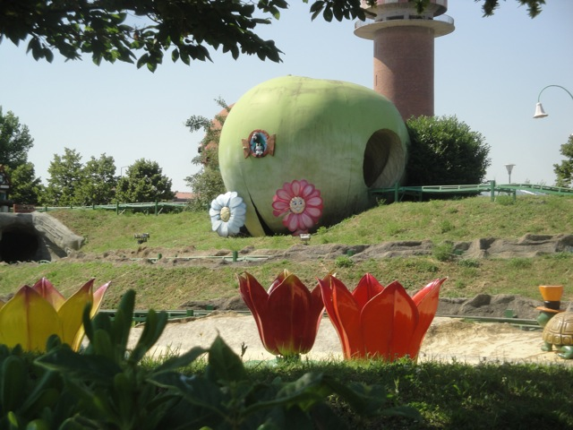
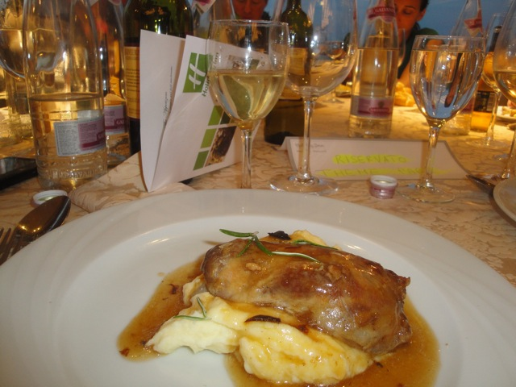

TPR's Mega Europe Trip
Rome Rome Credit Whoring
Rainbow Magicland
Fiabilandia
Mirabilandia
Movieland Studios Gardaland Walygator Park Holiday Park Europa Park Fort Fun Heide Park Schlossbeck Movie Park Germany Phantasialand
Parc Asterix Disneyland Paris
All right. Luckily, today was our relaxing day of the trip with only a small park and time to spend enjoying Rimini, so we had a late morning, which really helped me sleep off all the beer I drank last night. Oh, and this is the view from my room.
 The hotel we stayed at was very nice and all, though one complaint that I have with this hotel is that these elevators are pathetically small. So much so that I never even bothered, I just carried all my luggage up the stairs. But from what I heard, these puny elevators are fairly common in Europe, though this was the only hotel on the trip with them.
The hotel we stayed at was very nice and all, though one complaint that I have with this hotel is that these elevators are pathetically small. So much so that I never even bothered, I just carried all my luggage up the stairs. But from what I heard, these puny elevators are fairly common in Europe, though this was the only hotel on the trip with them.
Though in more good news about this hotel, they literally serve pie for breakfast!!! =) Now thats my kind of breakfast.
Yeah. Thats the bar we were at last night with the liters of beer we drank.
I kept seeing these pharmacies all over Europe, and especially in Italy. Now I know its just a pharmacy, but I swore that I thought that it was a medical marijuana shop until I looked inside!!! Seriously!!! It seems like the kind of logo I'd see that just screams Medical Marijuana.
Ooh!!! You have to take an escelator to get to this park!!! Fascinating!!!!
 Yep. We're here at Fiabilandia today.
Yep. We're here at Fiabilandia today.
First ride of the day would indeed be the ghost train.
And here we have way #1,273 to rip off stupid people. Have a rock vending machine. Seriously, are there really no access to any stupid rocks in Rimini?
Hats. One of the greatest threats to amusement parks around the globe.
I hope I brought some spare underwear with me cause this ghost train is so scary that it'll literally scare the sh*t out of you.
 All right. Time for the first credit of the day. This looks like yet another Wacky Worm.
All right. Time for the first credit of the day. This looks like yet another Wacky Worm.

WRONG!!! This is one of the longest and coolest wacky worms ever. =)
"What do you mean no strollers allowed!!!?"
"I know that this ride was meant for people just my size."
 Ooh. Look at all the stuff this Wacky Worm does!!!
Ooh. Look at all the stuff this Wacky Worm does!!!
 Ahh. Its an Alvey Family Photo.
Ahh. Its an Alvey Family Photo.
 Ooh. I wonder what this could be.
Ooh. I wonder what this could be.
GOD DAMMIT!!! WHY DO I ALWAYS END UP RIDING POLE POSITION EVERY SINGLE YEAR NO MATTER WHERE I GO TO AVOID IT!!!!!
 But hey. It was running great and spinning like crazy. So I can't complain. =)
But hey. It was running great and spinning like crazy. So I can't complain. =)
This looks like a very high quality Adams Family Show.
This is the most original statue ever built. You will never see this anywhere else in the world.
Didn't someone ask if European Parks have American themed areas?
Someone give me some bread for me to feed to these geese.
 All right. Time for us to get the final credit needed here.
All right. Time for us to get the final credit needed here.
Yeah. This is pretty much just another super long Wacky Worm with a Western Theme.
 Hey. It does look like a fun ride.
Hey. It does look like a fun ride.
You see those trims right there? They are HORRIBLE!!!! They COMPLETELY stop you and TOTALLY kill all of the potential that the ride has to offer!!! Yeah, I know its a kiddy coaster. Yeah, I know that it was mostly just looking cool. But man. I just hate that trim so much.
 "I would like to give Fiabilandia an award for high concern for saftey and great measures taken to protect guests."
"I would like to give Fiabilandia an award for high concern for saftey and great measures taken to protect guests."
Meh, these slides are fun and all, but just wait till you see the slides we'll be doing later in the trip.
You know, for being a tiny Italian childrens park, this place is really nice.
Do you get wet on this ride?
Damn!!! My plans have been ruined. =(
So this is what the inside of a dragon looks like. I guess all those Biology Textbooks were wrong.
All right. Our time at Fiabilandia is now over. Now we get to relax and hang out in Rimini. And look. Our hotel is giving away free apples. Awesome!!!
First things first. A big group of us all decided to go out to lunch.
First things first. A big group of us all decided to go out to lunch.
After lunch, we all decided to go check out our hotels private beach.
Here I am sticking my feet in the Adrian Sea. Yay!!! New Sea Credit!!!
Dude. This has got to be one of the nicest beaches in the world. Sure beats the crap out of all of the beaches I've been to in California. And I'm refering to the good ones. I don't even know what this reduces Venturas beaches to.
Thanks for having it when we're gone. >=(
Worst Abbey Road Impersination Ever.
All right. Later that evening, we all decided to go look for this tiny little park called Santa Fe because they have a powered coaster so the cheaters can get a new psuedo credit. I joined in not because I care about riding this not-a-credit, but because I'd be with fun people, and it'd be a fun adventure.
YAY!!! With a €50 bribe, we managed to get on the ride!!!!
One of the highest quality rides on the trip.
My count may not have gone up, but I had fun acting like an idiot.
 I love Rimini.
I love Rimini.
All right. Time for our hotel dinner with a great view of Rimini.
Ooh. Lets see what we'll be served.

Dude. This dinner was AWESOME!!!!!
Oh, and the dinner came with unlimited wine. I'm not really a wine person, but hey. They had some really good wine here.
"I am so gonna get diabetes!!!"
Mirabilandia
Home